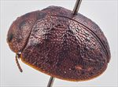
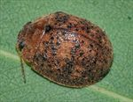
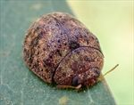
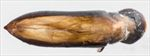
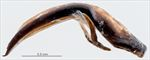
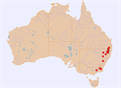

Click on images to enlarge

Male, Berridale, S.E. New South Wales

Male, Dundee, N.E. New South Wales

Male, Lake Lyell, Blue Mts, New South Wales

Aedeagus, dorsal view (Lake Lyell, Blue Mts, New South Wales)

Aedeagus, lateral view (Lake Lyell, Blue Mts, New South Wales)

Distribution
Ta19
Name
Trachymela sp. Ta19
Reference specimen
1999-0546, Glencoe, NE New South Wales.
Adult Description
Length: ♂ 5.6–7.0 mm (n=15), ♀ 6.3–7.5 mm (n=20).
Colouration:
Head: uniformly light- to reddish-brown with black-tipped mandibles, posterior of head black from some distance behind eyes (visible only if head extruded); antennomeres 1–5 straw-brown to light-brown, 6–11 usually similar, sometimes distal one or two segments slightly darker, rarely much darker, never black.
Pronotum: variable, some (northern specimens) uniformly brown, concolorous with head, others (southern specimens) with two black, usually small oval patches situated one on each side of centre.
Scutellum: brown, concolorous with pronotum (northern specimens), dark-brown, broadly edged with a darker shade, or even black (southern specimens).
Elytra: brown, concolorous with or fractionally darker shade than pronotum, distinct, discrete, raised, black verrucae are scattered over posterior half of disc and in scutellar angle, less often (mainly in southern specimens) black verrucae are very small and scattered at much higher density, often forming a black transverse band behind transverse depression; punctures are similar to or outlined in a fractionally darker shade than interstices, humeral callus may be concolorous with surrounds or partially darker brown.
Venter & Legs: southern specimens – uniformly light- to mid-brown; northern specimens – head black at least on gula, prosternum black, thoracic ventrites dark-brown, abdominal ventrites mid- to dark-brown, legs light-brown, epipleura may be brown or partially or fully black.
Cuticular Wax: light-brown, distributed somewhat unevenly over all of dorsal surface.
Morphology:
Head: punctures variable, moderately large (pd ≈ 2× ef) and quite evenly and densely distributed, rarely partially obliterated by rugose interstices. Antennae short (AL/BL: ♂ 39–43%, ♀ 30–36%), filiform.
Pronotum: almost evenly curved transversely, with a broad but very shallow depression situated behind the outside edge of each eye sometimes with a small central elevation, discal area smooth or slightly undulate, puncturation clearly impressed, evenly distributed and moderately dense in discal area, becoming much coarser at lateral margins. Front margins join lateral margins in a smoothly rounded right-angle, with lateral margin curving smoothly and gradually towards rear margin.
Scutellum: smooth or (rarely) very lightly punctured, more so posteriorly, with punctures smaller than on adjacent area of pronotum.
Elytra: surface evenly curved transversely over discal region, not noticeably explanate at margins, lightly curved longitudinally in anterior half, then slightly more strongly curved, a very shallow depression extends across surface just in front of middle, punctures large and distinct and relatively evenly distributed between the verrucae, sometimes set deeply among the network of raised interstices, smaller punctures are scattered among them, small round verrucae, usually with one or more small punctures, are scattered over elytral surface but concentrated around scutellar angle and the apical third of disc, where they sometimes weakly align in longitudinal rows, sometimes verrucae are very small and more densely and irregularly distributed, in that case often forming a transverse band just posterior to antero-median depression, elytral suture not carinate, surface continuous under humeral callus. Vertical extension of epipleura considerable (HCE/PW = 0.36–0.40).
Venter: prosternal process almost parallel-sided, open or lightly closed anteriorly, short setae present at rear of prosternal process and mesoventrite, a single seta on anterior and median trochanter; front edge of metaventrite beveled, truncate; inner edge of posterior of epipleurae lacking setae.
Male Genitalia (Aedeagus):
Dimensions: small (LPE/BL = 26–32%), lanceolate.
Dorsal view: shaft broadest at junction with basal section, from where the sides (usually prominently darker than inner region) are initially sub-parallel before converging very gradually towards apex, the angle of convergence becoming sharper shortly before apex, dorsal surface smoothly curved with faint dorso-median channel usually present for most of length, tip very slightly protruding, ostium small, oval.
Lateral view: shaft almost evenly and moderately curved throughout its length, thinning very slightly towards apex before ostium, tip slightly deflexed.
Immature Stages
Unknown.
Similar species
Ta66: it is very difficult to separate females of this species from those of Ta19. Individuals of Ta66 are usually smaller than those of Ta19, with only a small overlap in the size distributions. Ta19 seems to prefer monocalypt hosts, while Ta66 is primarily found on hosts in the subgenus Symphyomyrtus.
Ta16: Most specimens of Ta16 tend to have a higher density of black vittae on the elytra, though these tend to be smaller and less conspicuous, and the elytral surface is clearly punctured (rather than “reticulated”) though intermediates in these characters are present. In addition, specimens of Ta16 invariably have a black or very dark brown scutellum whereas that is only the case with Ta19 specimens from cold localities. The aedeagus of Ta19 is about 10% longer than that of Ta16 and less flattened in lateral view.
Ta93:
Notes
Taxonomy: This is a very variable “species”, particularly in the density and arrangement of elytral verrucae and its host utilization and is very possible that it includes two or more closely related species. Several specimens from high-altitude locations near Guyra in northern New South Wales have values of LPE/BL that deviate quite markedly from a linear relationship with body length. These specimens were collected from either Eucalyptus pauciflora or E. stellulata hosts and very likely constitute a separate species.
Morphological Variation: A specimen from Dundee on the northern NSW tablelands [2020-028], collected from the stringybark Eucalyptus cameronii, resembles the southern specimens more in the arrangement and density of verrucae as well as the substantially sub-parallel sides of the aedeagus. There is considerable variation in the extent of black colouration present on individuals of Ta19. Specimens from southern areas (as far north as Glencoe in northern NSW) have a head that is black ventrally at least in the gular region, black inner epipleura, a dark-brown or black scutellum and two round black marks on the prothorax. The shape of the aedeagus of both groups is very similar (although southern specimens tend to have the sides sub-parallel over a greater length).
Host Associations: Specimens of Ta19 have been collected from mostly monocalypt hosts, including Eucalyptus pauciflora (n=2), E. stellulata (n=3), stringybark species (Eucalyptus : Capillulus) (n=4) and unspecified peppermints (possibly E. radiata, n=7). E. viminalis (n=4) and E. deanei (n=1) are the only Symphyomyrtus hosts recorded.
Copyright © 2026. All rights reserved.
{kind=link}
{kind=link}
{kind=link}
{kind=link}
{kind=link}
{kind=link}